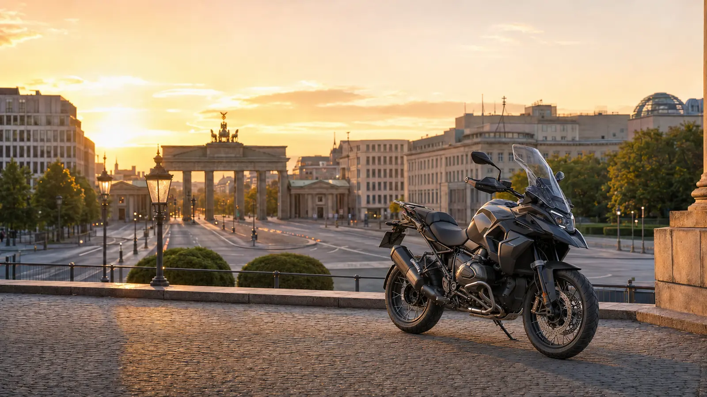

Große Auswahl in Großbritannien
Entdecken Sie aktuelle Motorräder von britischen Händlern und privaten Verkäufern auf einer Plattform.
Ob BMW, Honda, Yamaha, Kawasaki, KTM, Ducati, Triumph oder Suzuki: AnyBike findet das passende Motorrad in Großbritannien und unterstützt die Übergabe für den Transport nach Deutschland.

AnyBike verbindet Käufer in Deutschland mit Motorrädern von Händlern und privaten Verkäufern im gesamten Vereinigten Königreich – von der ersten Anfrage bis zur vereinbarten Übergabe.
Entdecken Sie aktuelle Motorräder von britischen Händlern und privaten Verkäufern auf einer Plattform.
Nennen Sie uns Marke, Modell, Baujahr, Kilometerstand, Farbe, Budget und gewünschte Ausstattung.
AnyBike sucht auch außerhalb des veröffentlichten Bestands nach passenden Motorrädern in Großbritannien.
Fragen Sie vor dem Kauf nach Fotos, Videos, Verkäuferprüfungen und verfügbaren unabhängigen Inspektionen.
Vorhandene Fahrzeugdokumente und die vereinbarte Vorbereitung in Großbritannien werden vorab bestätigt.
Die Übergabe kann an Ihren vereinbarten Spediteur, ein Lager oder einen Transportpartner erfolgen.
Teilen Sie AnyBike genau mit, welches Motorrad Sie suchen. Wir prüfen den britischen Markt und helfen Ihnen, ein passendes Fahrzeug für den Transport nach Deutschland zu finden.
Entdecken Sie etablierte Motorradmarken und wechseln Sie zu den jeweiligen AnyBike-Markenseiten, sobald diese veröffentlicht sind.
AnyBike kann BMW GS, RT, R nineT, S 1000 RR und weitere BMW Motorräder bei britischen Händlern und privaten Verkäufern suchen.
BMW Motorräder ansehen →Finden Sie Yamaha YZF-R1, MT, Ténéré, Tracer und weitere Modelle bei Verkäufern im gesamten Vereinigten Königreich.
Yamaha Motorräder ansehen →Suchen Sie Honda Africa Twin, Fireblade, Gold Wing, CB und weitere Honda Motorräder auf dem britischen Markt.
Honda Motorräder ansehen →Entdecken Sie Triumph Tiger, Street Triple, Speed Triple, Bonneville und weitere britische Modelle.
Triumph Motorräder ansehen →Durchsuchen Sie Kawasaki Ninja, Z-Modelle, Versys und weitere Motorräder britischer Händler und Privatverkäufer.
Kawasaki Motorräder ansehen →AnyBike kann Suzuki Hayabusa, V-Strom, GSX-R und weitere Suzuki Motorräder in Großbritannien suchen.
Suzuki Motorräder ansehen →Finden Sie Ducati Multistrada, Panigale, Monster, Diavel und weitere Ducati Motorräder im Vereinigten Königreich.
Ducati Motorräder ansehen →Suchen Sie KTM Adventure, Super Duke, Enduro- und weitere Performance-Modelle bei britischen Verkäufern.
KTM Motorräder ansehen →Nutzen Sie diese Modellseiten als Ausgangspunkt oder senden Sie einen Suchauftrag mit gewünschtem Baujahr, Kilometerstand, Farbe und Ausstattung.
AnyBike sucht passende Yamaha YZF-R1 in Großbritannien nach Baujahr, Farbe, Kilometerstand und Ausstattung.
Yamaha YZF-R1 ansehen →Finden Sie Yamaha MT-09 und MT-09 SP bei britischen Händlern und Privatverkäufern, auch nach Farbe und Modelljahr.
Yamaha MT-09 ansehen →Suchen Sie Yamaha Ténéré 700 aus Großbritannien, einschließlich Standard-, Rally- und höher ausgestatteter Adventure-Modelle.
Yamaha Ténéré 700 ansehen →AnyBike kann BMW R 1300 GS in Standard-, Adventure-, Triple-Black- und Option-719-Ausführung auf dem britischen Markt suchen.
BMW R 1300 GS ansehen →Finden Sie Honda Africa Twin mit Schaltgetriebe, DCT oder als Adventure Sports bei Verkäufern in Großbritannien.
Honda Africa Twin ansehen →AnyBike sucht Honda Fireblade nach Generation, Farbe, Kilometerstand und gewünschter Ausstattung.
Honda Fireblade ansehen →Finden Sie Triumph Tiger 900 GT, Rally und Pro bei britischen Händlern und privaten Verkäufern.
Triumph Tiger 900 ansehen →Nennen Sie Baujahr, Farbe, Kilometerstand und Ausstattung für Ihre Kawasaki Ninja ZX-10R aus Großbritannien.
Kawasaki Ninja ZX-10R ansehen →Suchen Sie ältere oder aktuelle Suzuki Hayabusa bei Händlern und privaten Verkäufern im Vereinigten Königreich.
Suzuki Hayabusa ansehen →Finden Sie Ducati Multistrada V4, V4 S und Rally auf dem britischen Markt.
Ducati Multistrada V4 ansehen →Beauftragen Sie AnyBike mit der Suche nach einer KTM 1290 Super Adventure, einschließlich S- und R-Varianten.
KTM 1290 Super Adventure ansehen →Nennen Sie AnyBike Marke, Modell, Baujahr, Kilometerstand, Farbe, Budget und gewünschte Ausstattung.
Anderes Motorrad suchen lassen →Neu eingestellte Motorräder werden direkt aus dem AnyBike-Bestand geladen. Öffnen Sie ein Inserat für vollständige Fahrzeugdaten und Anfrageoptionen.
AnyBike verkauft und beschafft Motorräder. Käufer können einen eigenen Spediteur beauftragen oder eine geeignete Übergabe in Großbritannien abstimmen. Einfuhr, Steuern, technische Abnahme und Zulassung müssen vor dem Kauf für das jeweilige Motorrad geprüft werden.
Hamburg ist ein wichtiger Logistikstandort für Norddeutschland. AnyBike kann das gekaufte Motorrad an Ihren benannten Spediteur oder vereinbarten Transportpartner in Großbritannien übergeben.
Bremerhaven und Bremen sind etablierte Fracht- und Fahrzeuglogistikstandorte. Die konkrete Route und Übergabe wird mit dem vom Käufer gewählten Transportpartner abgestimmt.
Für Käufer in Nordrhein-Westfalen sind Straßen- und Sammeltransporte häufig eine praktische Lösung. AnyBike koordiniert die Übergabe an den vereinbarten Spediteur in Großbritannien.
Käufer in Berlin, Brandenburg, Sachsen, Sachsen-Anhalt und Thüringen können ihren bevorzugten Transportpartner bestimmen und die britische Abholung mit AnyBike abstimmen.
Für Ziele in Hessen, Rheinland-Pfalz und den angrenzenden Regionen kann die Übergabe an einen internationalen Straßen- oder Sammeltransport organisiert werden.
Käufer in Bayern und Baden-Württemberg können AnyBike den gewünschten Zielort, Transportpartner und die benötigten Fahrzeugunterlagen vor dem Kauf mitteilen.
Ja. Sehen Sie sich den verfügbaren Bestand an oder senden Sie AnyBike einen Suchauftrag mit Marke, Modell, Baujahr, Kilometerstand, Farbe und gewünschter Ausstattung.
Ja. AnyBike kann britische Händler, private Verkäufer und ausgewählte Anbieter nach Motorrädern durchsuchen, die nicht im aktuellen Bestand angezeigt werden.
Ja. Händler können Einzelkäufe, regelmäßige Suchaufträge, Handelsbestand und größere Motorradpakete mit AnyBike besprechen.
Die Möglichkeiten hängen vom Motorrad und Verkäufer ab. Fragen Sie AnyBike nach verfügbaren Prüfungen, Fotos, Videos oder unabhängigen Inspektionsoptionen.
Ja. AnyBike kann die Abholung oder Lieferung an einen vereinbarten Spediteur, Transportpartner, ein Lager oder eine Umschlagstelle organisieren.
Ja. Sie können Ihren bevorzugten Spediteur beauftragen. AnyBike koordiniert die Übergabe in Großbritannien und stellt die vereinbarten vorhandenen Dokumente bereit.
Bei der Einfuhr aus Großbritannien können Zoll, Einfuhrumsatzsteuer und weitere Kosten anfallen. Die genaue Behandlung hängt vom Motorrad und Vorgang ab. Bestätigen Sie dies vor dem Kauf mit dem deutschen Zoll oder Ihrem Zollvertreter.
Nein, eine deutsche Zulassung kann nicht pauschal garantiert werden. Prüfen Sie vor dem Kauf Fahrzeugidentität, technische Ausführung, Genehmigungen, notwendige Umbauten und Abnahme mit der zuständigen Zulassungsstelle sowie einer anerkannten Prüforganisation.
Die verfügbaren Dokumente hängen vom Motorrad und Kauf ab. AnyBike bestätigt vor Abschluss unter anderem die vorhandene V5C, Verkaufsrechnung, Wartungshistorie, Schlüssel und weitere Fahrzeugunterlagen.
Öffnen Sie den verfügbaren Bestand und senden Sie eine Anfrage zu einem Motorrad. Wenn Ihr Wunschmodell nicht inseriert ist, nutzen Sie den persönlichen Suchauftrag.
Entdecken Sie aktuell verfügbare Motorräder oder teilen Sie AnyBike genau mit, was Sie suchen – vom einzelnen Motorrad bis zum Händlerbestand.